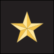
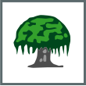
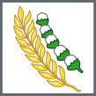

Nalar Digital & Dialektika Pancasila




Hafalan Al-Qur'an Ditukar Miras — Booth Newport
Di festival The Sounds Project (Eco Park Ancol, Jakarta Utara), booth Newport membuat "challenge": lancar hafal QS Ad-Dhuha → dapat sebotol miras.
- CNN Indonesia — Polisi Tetapkan 4 Tersangka Kasus Challenge Hafalan Qur'an Tukar Miras · 13 Agu 2026cnnindonesia.com/nasional/20260813184538-12-1391990/…
- detikPop — Petaka Hafalan Surat Al-Quran Tukar Miras di The Sounds Project yang Berujung Pidana · 15 Agu 2026detik.com/pop/music/d-8618679/…
- kumparanNEWS — Rumah MC Challenge Al-Quran Berhadiah Miras Didatangi Massa, Dibubarkan Polisi · 12 Agu 2026kumparan.com/kumparannews/…-27yH01JJONF
- Tirto — Kasus Promosi Miras: Pengingat Jaga Etika di Ruang Publik · 18 Agu 2026tirto.id/kasus-promosi-miras-pengingat-jaga-etika-di-ruang-publik-hBfJ
Nilai & Dialektika Pancasila
Bukan sekadar menyebut sila — bedah keterkaitan & benturannya.
- SILA 1QS Ad-Dhuha direduksi jadi gimmick & alat tukar promosi miras.
- SILA 2Kebebasan berekspresi & hiburan tanpa adab terhadap sakralitas agama lain.
- SILA 3Massa mendatangi rumah yang dikira milik MC: kohesi & ketertiban terkoyak.
Hiburan tidak menghapus kewajiban etis: persatuan di ruang publik majemuk mensyaratkan batas etis dalam promosi.— Ika Idris, Monash (Tirto)
Dekonstruksi Arsitektur Digital
Mengapa fenomena ini bisa marak secara sistemik?
Konteks runtuh
Candaan untuk audiens festival direkam & tersebar; pesan tak bisa ditarik
Algoritma outrage
Densitas emosi tinggi diprioritaskan → komentar, share & quote repost eksponensial
Echo chamber
Akun dakwah & komunitas gosip mengamplifikasi, saling validasi kemarahan
Vigilantisme digital
Massa datangi rumah yang dikira milik MC, ternyata rumah mendiang orang tuanya: main hakim sendiri, salah sasaran
Filter bubble
Tiap kubu hanya melihat narasi yang menguatkan sikapnya
POLARISASI — platform terus mempertemukan dua sentimen ekstrem demi engagement
Gagasan “Pancasila dalam Aksi”
Satu gagasan konkret dan inovatif — bukan saran umum.
Ajukan konten
Penyelenggara, sponsor & pemilik merek menyerahkan rencana konten saat mengurus izin.
Pemeriksaan awal
Konten dicek terhadap daftar hal sensitif lintas-agama.
Tinjauan panel
Konten yang ditandai ditinjau panel lintas-agama.